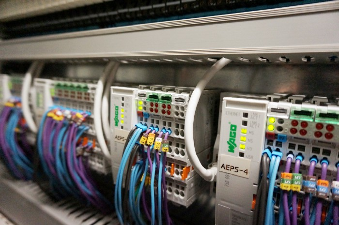
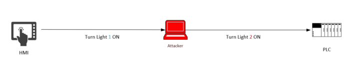
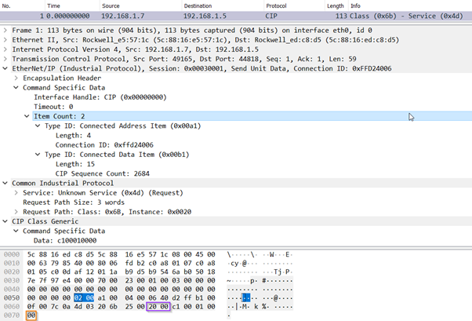
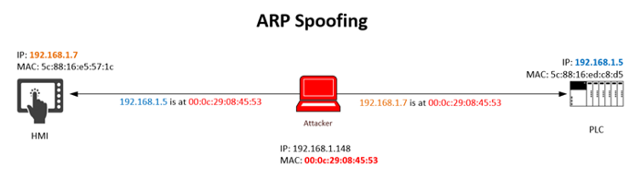
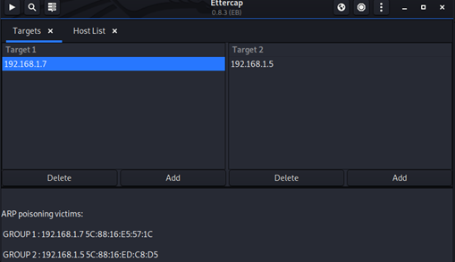
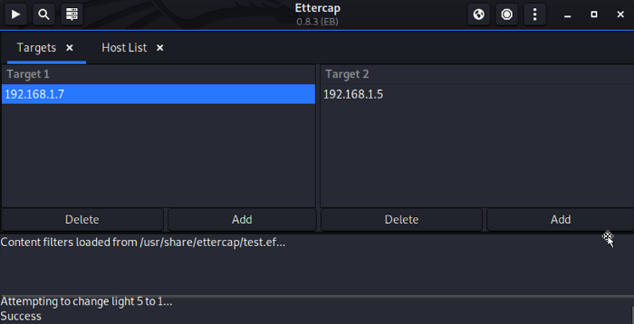

Packet Modification Attack on PLC with ARP Spoofing (MITM Attack)
The Testbed:
Firstly, I want to share a little information about the testbed I was allowed to play with before jumping in straight into the attack.
The testbed was a simple setup, comprised of a Human Machine Interface (HMI), Switch and a Programmable Logic Controller (PLC). The testbed also had flip switches linked to the light bulbs, and these light bulbs can be switched on and off physically using the flip switch, or it can also be done from the HMI.The testbed was a simple setup, comprised of a Human Machine Interface (HMI), Switch and a Programmable Logic Controller (PLC). The testbed also had flip switches linked to the light bulbs, and these light bulbs can be switched on and off physically using the flip switch, or it can also be done from the HMI.
The HMI was an Allen-Bradley PanelView Plus 7 1000 so the CVE list I had gathered which were all conveniently for PanelView Plus 6 was out of the equation. The PLC was also from Allen-Bradley, with the model number 1756-EN2T/D that I discovered during my reconnaissance phase.
Even with that system information, I have gathered, It was still tricky to find exploits for both the HMI and the PLC. There wasn’t a lot of exploits readily available anyway. Plus, the PLC I had to work with only had Ethernet/IP module installed, so Modbus exploits were also out of the equation.
With little experience in penetration testing, I’ve always relied on system vulnerabilities and simply downloading exploits available form exploit-db. Still, it’s OT I’m working on, and there is literally not a lot exploits out there.
Research.
I decided to look for reports on how these control systems can be compromised, hoping it would give me some idea. Most of the stories I saw were on Denial-of-Service (DoS) Attacks, but my supervisor told me not to focus on that because it was too simple.
I agree it was too simple… Legacy systems are prone to DoS attacks, simple SYN flood or Intrusive scanning could do the trick.
Thankfully, I came across this YouTube video from DEF CON 26 by Thiago Alves. From that, I learned the four attack scenarios, which was Modification, Interruption, Interception and Injection.
I decided to focus on Modification because Interruption is still DoS, Interception is viewing packets which can be done quickly with a sniffing tool (like Wireshark) since the communication is not encrypted anyway. An injection is just too difficult with my current knowledge of ICS Protocols.
The Attack Scenario.
The idea of the attack is to use ARP spoofing to direct the traffic between the HMI and the PLC to the attacker. When I become the man in the middle, I will be able to receive packets from the HMI. Once I receive the packet, I will modify the data before forwarding it to the PLC. Fig.1 should help you understand what I am trying to do.
So when an operator uses the HMI to turn a specific Light on, another lights up instead. Hence, a Packet Modification Attack.
The Execution.
Step 1: Script Writing
Thanks to my dear friend who told me about ettercap filters and how we can use it to replace data of the packets received before it is forwarded to the designated host.
I realised that when I was playing around with the lights, the packet data stays the same except for IP sequence count, Instance and Command Specific Data.
After analysing a few more packets, I discovered that Instance: 0x0020 highlighted in purple, is the address on the PLC corresponding to the light. From Fig.2, instance x0020 this is the light 5.
Command Specific Data: c100010000 — light on.
Command Specific Data: c1000100ff — light off.
I have mapped the lights and its corresponding addresses in Fig.3 to help you visualise.
The script that I wrote was to change the instance in this way when I turn light 5 on, light 1 lights up instead. If you want to know how to compile your script to a filter, visit systutorials.
The most important lines from the code above are line 1,2 and 4, everything else is extra.
Line 1 — is to filter the packet that has a destination port of 44818 because EtherNet/IP makes use of TCP port number 44818 for explicit messaging. I only want the packets that are for the PLC.
Line 2 — IF statement is to filter packet with instance pattern \x25\x00\x20\x00 for light 5. From here, The packet that I should be getting is an HMI packet for light 5 to the PLC.
Line 4 — Replace the packet data to light 1 which is \x25\x00\x1c.
Step 2: Becoming the Man in the Middle.
Fig.4 Illustrates how the my Kali (Attacking Machine) will perform ARP Spoofing which will enable me to pretend as the PLC for the HMI and an HMI for the PLC.
What is ARP Spoofing?ARP Spoofing is a man-in-the-middle attack where an attacker sends forged ARP messages onto the Local Area Network (LAN) to associate the attacker’s MAC Address with an IP address of a legitimate host. Once the MAC Address is linked, it will cause any traffic meant for the IP address to be sent to the attacker.
Before ARP Spoofing, I made sure IP Forwarding was enabled so when HMI is being spoofed, packets that my Kali receives can be forwarded to the PLC. This can be done by running a simple command in the terminal:
I used the tool Ettercap for ARP spoofing as shown in Fig.5 below.
With IP Forwarding disabled, you can imagine how many bad TCP packets would be detected by Wireshark. Unless you are planning to perform an Interruption attack, you can leave it to Zero.
Step 3: Loading the filter!
As I became the man-in-the-middle, I loaded the filter and pressed light 5 on the HMI, and it worked!!!
If you were curious about how the script worked on the ettercap and what output it showed, you could take a look at Fig.6.
Any feedback or constructive criticism is welcomed! You can find me on my twitter @moveax_nic, LinkedIn @nicoleaponce or my YouTube channel!
Oct 21, 2020